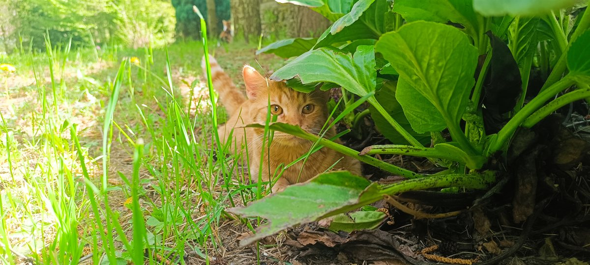
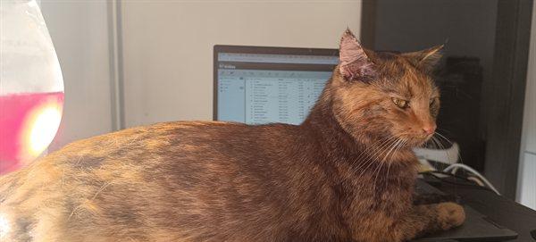
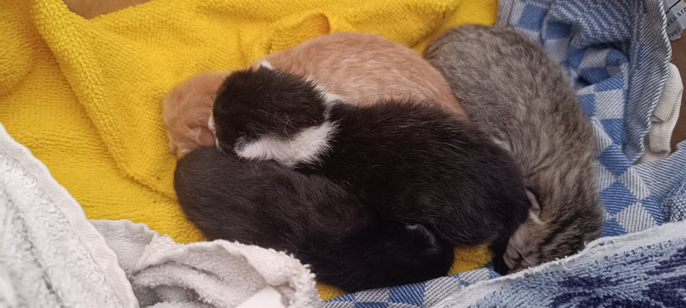

We breed European Shorthairs. We select them for temperament and intelligence.
Our cats take us for walks.

RunářovSokrates at the edge of the village, where he never goes on his own.
RunářovSokrates resting on a warm stone in the garden.
RunářovSokrates watching the surroundings from a wooden fence.
RunářovSokrates high on a wooden beam under the woodshed roof.
This is a small cattery in Moravia, in the Czech Republic — a flat in Brno and a house in a village called Runářov, where a hundred houses hold about fifty people and you can hear a train three kilometres away.
We keep European Shorthairs: the ordinary domestic cat of this continent, bred here for one thing only. Not for the shape of the ears. For temperament.
It began with a cat who was unlike the others.
Where it began
Šipka
She came with me on evening walks, a kilometre and a half around the village, of her own accord and without a lead. She hunted mice while I stood by and cheered. She slept leaning against the back of my monitor.
She was calm in a way I had not met in a cat before. Not afraid of people or of dogs, never panicked, and she went to look at unfamiliar things rather than away from them. It seemed a waste that such a character should simply vanish — so the breeding began.
One evening she went out and did not come back. I do not know what happened. She left five kittens and this cattery.

2 July 2025Šipka at the keyboard. Most photos on this website were taken in passing.
22 December 2024 · RunářovAn evening walk in winter. Šipka on a concrete well cover by the bushes.
24 December 2024Šipka in her shelter on Christmas Eve. Big curious eyes and total calm.
24 May 2025 · RunářovAt the workshop threshold in Runářov. Always where something is happening.
9 July 2025Šipka in summer. Focused and serene before the birth of the kittens.
8 August 2025Šipka with all five kittens of her first litter. A patient and attentive mother.
25 August 2025 · RunářovOn an evening walk around the village. She used to come of her own accord without a lead.
31 October 2025Šipka and young Sokrates sharing a food bowl. No competition, no restlessness.
16 November 2025Šipka watching her growing kittens play together.
1 December 2025Šipka. Calm in a way I had not met in a cat before.
Method
How we choose
For choosing within a litter, no absolute scale is needed. We compare kittens of the same age from the same season and keep those that behave, repeatedly, as we want them to: calm, curious, sociable, without unnecessary aggression. This is how animals are compared in any breeding programme — against their contemporaries, not against an ideal.
Whether the line as a whole is moving is a different question, and there a scale is required, because otherwise each generation is only ever measured against itself. We are building one: a standardised behavioural assessment is already in use and other methods are being tested.
By intelligence we mean what we perceive as intelligence: composure, openness, attention, good spirits. It is a working definition, not a philosophical one.
Nothing else is allowed into the decision. The moment a secondary consideration enters — colour, appearance, convenience — the selection stops pointing where it should.
That behaviour is heritable in cats is not our idea. Nobody is surprised that a border collie herds and a retriever retrieves; that is breeding, not training. In cats it has barely been studied, because for a hundred and fifty years cats have been bred for how they look. The first large study of heritable feline behaviour appeared in Scientific Reports in 2019: a team at the University of Helsinki analysed questionnaires on 5,726 cats and found heritable differences in activity, shyness, sociability and aggression across nineteen breeds.
Direction
Why each generation replaces the last
Conventional pedigree breeding is stabilising. It has a written standard, breeds towards it, and once the standard is reached it tries to hold it — the aim is to produce the same healthy, predictable animal again and again. Nothing is going anywhere, which is why a queen may be bred for years at no cost to the programme.
This one is directional. It aims at something the population does not yet have, and that has consequences. Each generation is replaced by the next: two females and one male are kept, the previous generation is neutered and goes to live in a home of its own. A cat kept in breeding for years would pull the population back towards the average that the selection is trying to move it away from.
It costs us the comfort of proven mothers. Without it there would be no point.
Health
Testing
Our breeding cats are tested at Genomia, a veterinary genetics laboratory in Plzeň. It is not a single test for a single disease but sequencing across more than sixty known mutations — inherited disorders, coat traits and blood group.
Two things about it matter more than the list. The cat's identity is verified by a veterinarian at the moment of sampling and tied to the microchip number, so the result provably belongs to that animal. And every report carries a verification code: anyone can enter it on the laboratory's website and see the result without having to take our word for anything.
We publish the reports in full.
Names
Why the kittens are called what they are
Kittens are named after scientists, mathematicians and philosophers. There is nothing profound in it — the habit simply proved useful, because a name with a story attached is easier to remember and easier to live with.
Where the person is still living, we write to them and send a certificate of honorary godparenthood. The first went to Alain Aspect, whose experiments with entangled photons settled by measurement a question that Einstein could only doubt. There will be others, and none of them are asked for anything in return.
Handling
Only by kindness
This is the most important thing we have learned, and we did not learn it quickly. We used to do it differently and found out through our own mistakes.
Nobody raises their voice at a cat here. For a cat, a raised voice is already punishment — and she does not connect it with what she did, she connects it with you. She learns nothing except that people are unpredictable, and everything people call problem behaviour follows from there.
A cat is not a dog, to be trained and given boundaries. Which is precisely why she feels no need to test where the boundaries are.
The surprising part is how much easier this is for both sides. Nothing to enforce, nothing to be consistent about, nothing to regret afterwards. Severity is work. Kindness is a saving.
Cats
The cats
Sokrates
male · 2025RunářovSokrates at the edge of the village, where he never goes on his own.
RunářovSokrates resting on a warm stone in the garden.
RunářovSokrates watching the surroundings from a wooden fence.
RunářovSokrates high on a wooden beam under the woodshed roof.
The largest of the litter, and he was the largest from day one. The most affectionate tomcat I have owned — he goes to everyone and is afraid of no one. When another cat hisses at him, he never hisses back; he is more disappointed and does not understand why.
He lets himself be carried, which is rare for a cat. Sometimes he comes and wants to be held in your arms. It probably started in the kitchen where we hunted flies: I held him up to those high on the wall, and he flicked them off with his paw.
He comes with me on evening walks to the edge of the village, where he never goes alone — cats enjoy walks when you walk with them. You are their instant security. He once stole a mouse caught by Sibyla.
29 July 2026Sofie by the laptop. Curious about everything that happens.
12 July 2026Detail portrait of Sofie. A quiet and attentive companion.
25 July 2026Sofie resting under a chair. Quiet and keeping to herself.
For the first two months she was the boldest of the litter and afraid of nothing. Then it somehow turned: today she is quiet and keeps to herself. She lets herself be carried briefly when in the mood.
Now and then something occurs to her and she explains it to me at length. She is clearly dissatisfied that I do not understand.
When I weighed her first kittens in July this year, one began to squeak. She ran over, took it gently from my hand by the scruff, and carried it back to the basket. She did not scratch me even when I lifted her with the kitten in her mouth and carried them both back.
8 May 2026 · RunářovSibyla with a caught mouse. Holds her ground reliably and without panic.
10 July 2026Detail portrait of Sibyla. Calm and focused nature.
15 July 2026Sibyla with newborn kittens. Gentle and attentive mother.
15 July 2026Close-up of newborn kittens on their first day of life.
18 July 2026 · RunářovDrinking rainwater at the drainpipe. Always self-reliant.
The smallest of the litter, and at first I thought we would not keep her for breeding. The smallest she stayed to this day — but in time she became the more enterprising of the sisters, cheerful and always around. Next to Sokrates she stays closest to me.
She holds her ground without panic and never makes a drama out of anything. An excellent hunter.
Both settled in their new environments within a few days, without anxiety and without trouble with other animals in the household. For breeding, this is crucial information: a calm cat handles moving far better.
In Brno they live indoors. In Runářov they have a garden, a woodshed with automatic feeders, heated mats for the winter and cameras. There is almost no traffic there, and the recordings show that cats live to a good age outdoors.
Neighbouring cats come to the woodshed too — there is a row of bowls, a sort of buffet. A fox turns up occasionally.
RunářovFox argues, cat watches. Security camera recording at the woodshed.
The walk mentioned at the top of this page is not what people usually imagine. You do not lead and the cat does not follow: you go where she goes. She takes you from tree to bush, at her pace and along her route, and then uses the fact that you are with her to cross an open space she would not risk alone. You are her cover. And when she does not feel like it, she does not go, and that is as it should be.

27 July 2026Sofie's first litter, morning after birth. Four kittens, first weight 108 grams.
This year
The kittens
Sibyla's litter · 14 July 2026
20 July 2026Four kittens from Sibyla's litter at six days old, sleeping together in their bed.
14 July 2026Alain, male — Alain Aspect — experiments with entangled photons, Nobel Prize 2022
Alain
male — Alain Aspect — experiments with entangled photons, Nobel Prize 2022
They leave at fourteen weeks at the earliest — this year at the very end of September, more likely in October — fully vaccinated, wormed, microchipped and registered, with veterinary documentation, records of descent and a contract of sale. Both parents have the full genetic panel, so a kitten cannot carry any of the tested inherited diseases: there is nowhere for it to have come from.
At least three kittens stay here for the next generation and the choice is made over the coming weeks, so nothing is reserved yet. You are welcome to see them long before that.
Pet kittens normally stay in the Czech Republic. Breeding animals are a different matter: we would welcome an independent line elsewhere, and distance is an advantage rather than an obstacle. Get in touch.